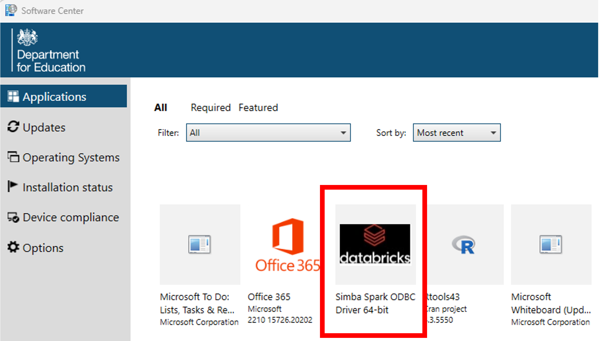
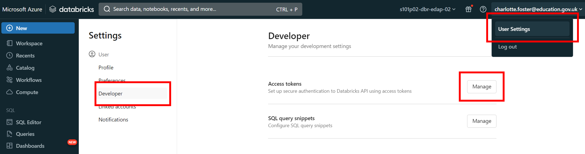

library(odbc)
library(DBI)
con <- DBI::dbConnect(
odbc::databricks(),
httpPath = Sys.getenv("DATABRICKS_SQL_PATH")
)
odbcListObjects(con)Set up Databricks SQL Warehouse with RStudio
The following instructions will help you to set up a connection between your laptop and your Databricks SQL warehouse which can then be used in RStudio to query data.
Note
Please note: This guidance should be followed if you wish to run SQL scripts from RStudio against data held in tables in Databricks. If you wish to run R scripts or access data held in a volume instead, you will need a personal compute cluster. The guidance for setting up a personal cluster that works with RStudio can be found on our set up Databricks personal compute cluster with RStudio page. You can learn more about compute resources on our Databricks fundamentals page.
You can use data from Databricks in two different ways:
- In the SQL editor or in notebooks via the Databricks environment
- In RStudio via an ODBC connection, similarly to the way that you might currently use data stored in a SQL Server
Compute resources
When your data is moved to Databricks, it will be stored in the Unity Catalog and you will need to use a compute resource to access it from other software such as RStudio.
A compute resource allows you to run your code using cloud computing power instead of using your laptop’s processing power. This means that using compute resources can allow your code to run faster than it would if you ran it locally, as it is like using the processing resources of multiple computers at once. On this page, we will be referring to the use of SQL Warehouses as the compute resource to run your code.
SQL Warehouse
A SQL Warehouse is a SQL-only compute option which is quick to start and optimised for SQL querying. Although the name “warehouse” suggests storage, a SQL Warehouse in Databricks is actually a virtual computing resource that allows you to interact with Databricks by connecting to your data and running code.
This option is recommended if you only require SQL functionality in Databricks and is ideal if you already have existing RAP pipelines set up using SQL scripts in a Git repo.
SQL Warehouses do not support R, Python or Scala code. Currently they also do not support widgets within Databricks notebooks. If you want to use compute resources to run widgets or R or Python code, then you will need to use a personal cluster. There is guidance on the use of personal clusters on the Using personal clusters with Databricks page.
SQL Warehouses enable you to access tables in the Unity Catalog, but not volumes within the Unity Catalog. Volumes are storage areas for files (e.g. .txt files or .csv files) rather than tables. You can learn more about volumes on the Databricks documentation site or on our Databricks fundamentals page. To access a volume, you will also need to use a personal cluster.
Pre-requisites
Before you start, you must have:
Access to the Databricks platform
Access to data in a SQL Warehouse on Databricks
R and RStudio downloaded and installed
The
ODBCandDBIpackages installed in RStudio
If you do not have access to Databricks or a SQL Warehouse within Databricks, you can request this using a service request form.
If you do not have R or RStudio, you can find them both in the Software Centre. Note that you need both R and RStudio installed.
Process
There are three steps to complete before your connection can be established. These are:
- Installing an ODBC driver on your laptop to enable a connection between your laptop and Databricks
- Modifying your .Renviron file to establish a connection between RStudio and Databricks
- Adding connection code to your existing scripts in RStudio
Each of these steps is described in more detail in the sections below.
Setting up the ODBC driver
An ODBC driver is required for the ODBC package in R to work - you must install it before attempting to use the package to connect to your data.
Install the Simba Spark ODBC driver from the Software Centre
Important
If you have previously set up an ODBC connection, or followed the set up Databricks personal compute cluster with RStudio guidance, then you can skip this step.
Open the Software Centre via the start menu
In the ‘Applications’ tab, click
Simba Spark ODBC Driver 64-bit

- Click install
Establishing an RStudio connection using environment variables
The ODBC package in RStudio allows you to connect to Databricks by creating and modifying three environment variables in your .Renviron file.
To set the environment variables, call usethis::edit_r_environ(). You will then need to enter the following information:
DATABRICKS_HOST=<databricks-host>
DATABRICKS_SQL_PATH=<sql-warehouse-path>
DATABRICKS_TOKEN=<personal-access-token> Once you have entered the details, save and close your .Renviron file and restart R (Session > Restart R).
Note
Everyone in your team that wishes to connect to the SQL Warehouse in Databricks and run your code must set up their .Renviron file individually, otherwise their connection will fail.
The sections below describe where to find the information needed for each of the four environment variables.
Databricks host
The Databricks host is the instance of Databricks that you want to connect to. It’s the URL that you see in your browser bar when you’re on the Databricks site and should end in “azuredatabricks.net” (ignore anything after this section of the URL).
Databricks SQL Warehouse Path
As described in the SQL Warehouses section, in Databricks, SQL Warehouses are a way to gain access to your data in the Unity Catalog. They run queries and return the results either to the user or to a table.
To get the Warehouse ID, follow these steps:
- click ‘SQL Warehouses’ under the ‘SQL’ section of the left hand menu on Databricks
- click on the warehouse name that you’d like to get the ID for
- the warehouse id is the ‘HTTP Path’ in the ‘Connection details’ tab
- the ID should start with something similar to “/sql/1.0/warehouses/”
Databricks token
The Databricks token is a personal access token.
A personal access token is is a security measure that acts as an identifier to let Databricks know who is accessing information from the SQL warehouse. Access tokens are usually set for a limited amount of time, so they will need renewing periodically.
In Databricks, click on your email address in the top right corner, then click ‘User settings’
Go to the ‘Developer’ tab in the side bar. Next to ‘Access tokens’, click the ‘Manage’ button

Click the ‘Generate new token’ button
Name the token, then click ‘Generate’
Note
Note that access tokens will only last as long as the value for the ‘Lifetime (days)’ field. After this period the token will expire, and you will need to create a new one to re-authenticate. Access tokens also expire if they are unused after 90 days. For this reason, we recommend setting the Lifetime value to be 90 days or less.
- Make a note of the ‘Databricks access token’ it has given you
Warning
It is very important that you immediately copy the access token that you are given, as you will not be able to see it through Databricks again. If you lose this access token before pasting it into RStudio then you must generate a new access token to replace it.
Pulling data into RStudio from Databricks
Now that you have enabled ODBC connections on your laptop, and enabled a connection between Databricks and RStudio, you can add code to your existing scripts to pull data into RStudio for analysis. If you have connected to other SQL databases before, this code will look quite familiar to you.
To access the data, we will make use of the ODBC package. You can find documentation about this package on the Posit website. You will also need to have the DBI package installed.
Include the following code in your R Script: